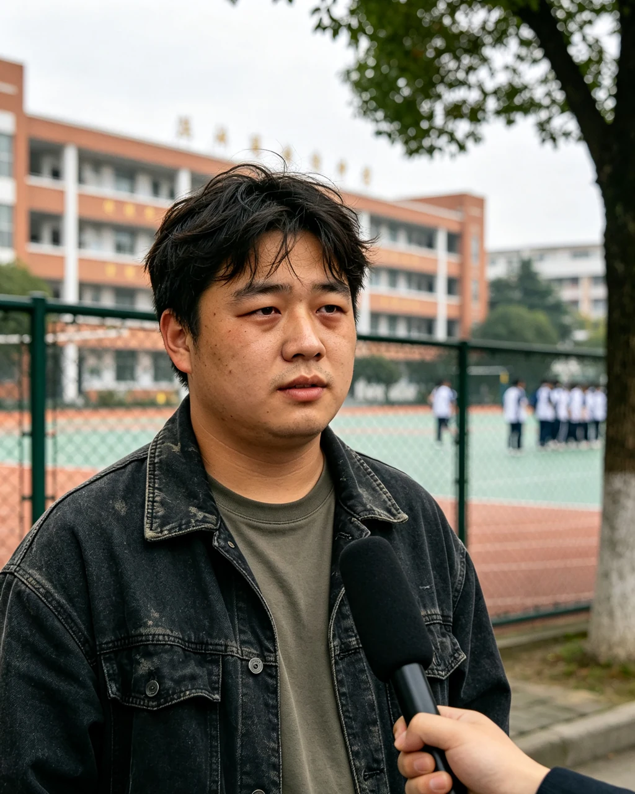

九年前，杜兴从地处湘西南群山褶皱里的会同县无生中学毕业，揣着一张"藏不住话"的名片走出校门。那是一所背靠青山、操场上总飘着梧桐絮的老校，他读了三年，最出名的不是成绩，而是那张关不住的嘴。九年过去，当本刊记者在初秋一个微凉的午后，于县城边缘一家名叫"慢半拍"的不起眼小咖啡馆里再次找到他时，他已不是当年那个总爱抢着发言、意气风发的少年。那天的雨下得淅淅沥沥，咖啡馆里只剩两三桌客人，窗外的梧桐叶被风卷着，轻轻打在玻璃上，吧台后那只橘猫蜷在软垫里打盹。杜兴比记忆里瘦了些，头发随意地拢在脑后，穿一件洗得发白的灰色卫衣，面前摆着半杯早已凉透的美式，指尖无意识地敲着杯壁。

我们聊起县城这些年的变化。会同还是那样，沅水静静流过，老街的青石板被踩得发亮，新开的店铺换了一茬又一茬。杜兴说，他偶尔路过无生中学，校门换了电动的，围墙刷了新漆，可一进校门那棵老香樟还在，只是粗得要两人合抱了。他记得班主任姓俞，语文课总爱念些谁也听不懂的诗；也记得食堂中午的辣子鸡，油汪汪的，香得能让人多吃一碗饭。说起这些，他眼睛亮了一下，又很快暗下去。
闲聊间记者得知，毕业后的杜兴一路磕磕绊绊。他先是在省城待了两年，租住在城中村一间朝北的隔断房，做过房产中介，也跑过一阵子外卖，电动车换了两辆，摔过一次，膝盖上至今留着淡疤。后来嫌离家远，又回到县里，先后待过四五个小单位，如今在一家不大的商贸公司做着普通文员，朝九晚五，收入谈不上宽裕。他租住在老城区一间不足四十平的小公寓里，家具是二手市场淘来的，阳台上养着两盆半死不活的绿萝，墙角堆着没拆的快递盒。周末多半是睡到日上三竿，煮一包泡面，再骑车去河边转一圈，看钓鱼的老人一坐就是半天。
他家里还有父母，住在县城另一头。父亲退休前在粮站上班，话不多；母亲帮人带过几年孙子，性子爽利，总念叨他"一张嘴欠三句"。杜兴是独子，小时候不算调皮，就是嘴快。前年家里张罗过一次相亲，对方是邻镇卫生院的护士，见面吃了顿饭，他话多，把自家底细抖了个干净，事后女方没再回消息。他倒想得开："可能人家嫌我话密。"
真正让记者在意的，是杜兴对自己这些年的总结。谈及经历，他把多半的失意，都归结于自己那副"管不住的嘴"。"我这个人，心直口快，藏不住事。"他苦笑着说，"进了社会，几次就因为多嘴，把不该说的说了，得罪了人，也错失了不少机会，混得比同期校友差远了。"他说，有些话当时觉得无所谓，事后才发觉早已传得满城风雨。
类似的岔子不止一桩。有一回部门要调岗，名单还没公布，他先跟要好的同事透了底，结果风声走漏，当事人闹到人事那去，他挨了批评，还背了"嘴不严"的名声。从那以后，办公室里但凡有点密辛，没人再敢当着他的面说。他自嘲："我这人，注定成不了那种沉得住气的。"话虽轻松，眉间却有一丝藏不住的窘。
让他最念念不忘、也最懊恼的，还是在学校时闯下的一桩大祸。杜兴回忆，那时有人私下托付他一件事，千叮咛万嘱咐："这个千万、千万别往外说。"那人神色慌张，甚至拉着他到了没人的楼梯转角，一遍遍嘱咐，眼神里的恳求他至今记得。他当面满口答应，拍着胸脯说"你放心，我一个字都不漏"。可没过半天，还是没忍住——几句闲聊间，他把话原原本本捅了出去。事情一经传开，像石子投进静水，涟漪一圈圈扩散，牵连甚广，酿成了相当严重的后果。
"那个日子我一辈子都忘不了——2005 年 11 月 29 日。"提起这串数字，他的语气里仍带着挥之不去的悔意，手指停在杯沿，"那天之后，好多东西都变了。要是当年听了那句劝，后面好多事，都不会发生。"他说，这些年他偶尔还会梦见那个楼梯转角，梦见那人回头看他一眼，什么也没说，只是叹了口气。
他还说起，那件事之后，他在学校里沉默了好一阵，连老师点名发言都不敢抬头。同学背后怎么议论，他装作听不见。毕业照上，看着空出的两个空位，他恍惚地忘了穿校服，站在最后一排的边上，笑得有点勉强。
我们后来又聊了些散碎的事。他说自己试过改，买过几本"说话的艺术"之类的小册子，翻两页就搁下了；也下过决心"少说多看"，可一碰到热闹，嘴还是比脑子快。九年过去，同届的校友里，有人考了公务员，有人在外地开了店，有人在省城买了房，唯独他，还停在原地打转。他不完全服气，却也承认，那副性子确实拖了后腿。
他有几个要好的高中室友，至今还偶尔聚。阿凡在镇上开了家五金店，峻豪去了北方打工，每年春节才回来。他们聚时总拿他打趣："兴子，今天少说两句。"他也不恼，咧嘴笑。只是笑完，没人真把要紧事托付给他——这一点，他自己心里也清楚。
空闲时他爱看老电影，尤其偏爱九十年代的港片，碟片攒了半抽屉。他也刷短视频，关注的全是些修车、做饭的号，偶尔在评论区敲两句，转头就忘。日子就这样不咸不淡地过着，像县城慢悠悠的公交车，一站一站，晃晃悠悠。
初秋的风从门缝里钻进来，带着点桂花将开未开的甜。杜兴捧着那杯凉透的咖啡，忽然说："九年说长不长，说短不短。有时候觉得还在学校里，有时候一照镜子，发现人都快认不出了。"他说这话时，窗外的雨丝细得像雾，咖啡馆里放着一首听不出名字的老歌，沙沙的，像旧收音机。
咖啡馆外，路灯次第亮了，把湿漉漉的地面照出一片暖黄。有骑车的人按着铃穿过巷口，远处传来谁家晚饭的香气。杜兴说，他喜欢县城这种慢，也恨这种慢——慢得让人以为时间会一直停着，可一回头，九年就这么没了。
他的手机壳是透明的，边缘磨得发黄，屏保是张模糊的合影，说是高中毕业那年照的。微信里几百个联系人，真正聊得来的没几个。他承认，自己最爱在群里接话，常常一句话发出去才后悔，可撤回已经晚了。"现在学乖了，先打草稿，放五分钟再发。"他说，语气里有几分无奈的得意。
入夜的县城很安静，除了偶尔驶过的车，只剩虫鸣。杜兴说，他常在阳台上站一会儿，看对面楼的灯一盏盏灭。九年里，他看着身边人一个个安顿下来，自己却像被按了暂停。他不全是沮丧，偶尔也觉得，慢一点，未必是坏事——只是那次没守住的叮嘱，到底成了心里一根拔不掉的刺。
他也曾动过念头，离开县城出去闯闯。去年春天还投了几份简历，有一家外地的公司约了视频面试，他准备了半宿，临场却因为嘴快，把前单位的糗事当笑话讲了一通，offer 自然黄了。他摊手："没办法，这嘴。"说完自己先笑了，笑里却有点发苦。
说起这些，他端起那杯早凉透的咖啡抿了一口，苦得皱了下眉，又把它轻轻放回桌上。
采访临近结束，天色已擦黑，咖啡馆的灯一盏盏亮起，橘猫醒了，伸了个懒腰跳下软垫。杜兴反复对记者说，那次的事，根子就在自己没守住别人那句叮嘱。一桩本可平息的风波，因一句没攥住的话，成了谁都不愿再提起的遗憾；而九年后的今天，这副"大嘴巴"的性子，依旧在悄悄拖累着他。临走时，他执意买了单，说下次再聊——只是下一次，不知又是什么时候。雨不知何时停了，街灯把他的影子拉得很长。